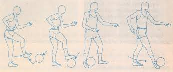
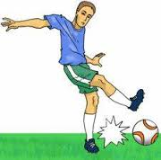
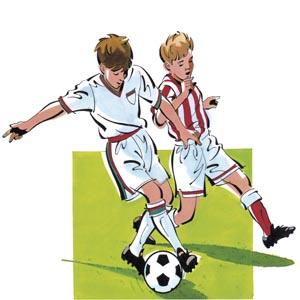

la historia del fútbol podría comenzar en el antiguo Egipto, ya que durante el siglo III a.C. se realizaba un juego de pelota como parte del rito de la fertilidad, en el que se practicaba algo parecido al balonmano. Sin embargo en China ya se había inventado la pelota de cuero un siglo antes, cuando Fu-Hi, inventor y uno de los cinco grandes gobernantes de la China de la antigüedad, creó una masa esférica juntando varias raíces duras en forma de cerdas a las que recubrió de cuero crudo; con esto nacía la pelota de cuero, con la que se jugaba simplemente a pasarla de mano en mano. Esta pelota fue adoptada posteriormente en los juegos populares de sus vecinos India y Persia. Por otra parte, en las antiguas civilizaciones prehispánicas también se conocen juegos de pelota más similares a lo que se conoce hoy como fútbol. Así por ejemplo los aztecas practicaban
el tlachtli, una mezcla entre tenis, fútbol y baloncesto en el que se prohibía el uso de las manos y los pies y el capitán del equipo derrotado era sacrificado.
La historia del fútbol continuaría en la Grecia clásica, donde incluso Homero llegó a hacer alusión también a un juego de pelota, al que llamaban 'esfaira' o 'esferomagia' debido a la esfera hecha de vejiga de buey que se utilizaba en el mismo. Desde ahí pasó al Imperio Romano, que utilizaban en su juego 'harpastum' un elemento esférico llamado 'pila' o 'pilotta' que evolucionó hasta el término 'pelota' utilizado actualmente. Durante la Edad media tuvo mucha fama entre diferentes caballeros y culturas; entre otras anécdotas se dice que Ricardo Corazón de León llegó a proponer al caudillo musulmán Saladino, que dirimieran sus diferencias sobre la propiedad de Jerusalén con un partido de pelota.
Los romanos llevaron hasta Britania su juego de pelota. Durante la Edad Media la historia del fútbol tuvo grandes altibajos y fue prohibido por su carácter violento para más tarde ser adaptado y utilizado como deporte nacional en las islas británicas. A comienzos del Siglo XIX comenzó a practicarse el 'dribbling-game' en las escuelas públicas y de ahí pasó a las universidades más importantes (Oxford, Cambridge) donde se escribieron las primeras reglas (el Primer Reglamento de Cambridge apareció en 1848) y en 1863 se funda la Football Association, naciendo el denominado 'juego moderno' o 'fútbol asociado' y separando este juego del actual rugby. La separación entre el rugby y el fútbol o soccer británico surgió en la Universidad de Rugby, donde comenzó a jugarse un deporte que permitía coger el balón con las manos y correr con él.
El nombre 'fútbol' proviene de la palabra inglesa 'football', que significa 'pie' y 'pelota', por lo que también se le conoce como 'balompié' en diferentes regiones hispano parlantes, en especial Centroamérica y Estados Unidos. En la zona británica también se le conoce como 'soccer', que es una abreviación del término 'Association' que se refiere a la mencionada Football Association inglesa. El uso de un término u otro dependía del status de la clase social en la que se practicaba; así las clases altas jugaban al 'soccer' en las escuelas privadas mientras que las clases trabajadoras jugaban al 'football' en las escuelas públicas.
El fútbol se hizo muy popular en las islas y se extendió gracias a los trabajadores ingleses que marchaban al extranjero con las grandes sociedades financieras y empresas mineras. También se exportó el nombre del deporte, llamándose 'fußball' en Alemania, 'voetbal' en Holanda, 'fotbal' en Escandinavia, 'futebol' en Portugal o 'fútbol' en España, por ejemplo. Pronto surgieron nuevos equipos por toda Europa, como Le Havre Athletic Club en Francia (1.872) o el Génova en Italia (1.893).
En España se comenzó a jugar al fútbol fue en la zona de las Minas de Riotinto (Huelva). Así nació el primer equipo español, el "Huelva Recreation Club" en 1.889, formado exclusivamente por jugadores extranjeros; posteriormente se fundaron el Palamós, el Águilas, el Athletic de Bilbao y el F. C. Barcelona. En 1.902 se disputó la primera competición oficial, la Copa del Rey Alfonso XIII, en la que el Vizcaya le ganó al Barcelona en la final por 2-1. Ya en el siglo XX, el 21 de mayo de 1.904 se funda la Federación Internacional del Fútbol Asociado (FIFA) y por primera vez se establecen reglas mundiales.
El cabeceo es el arte de golpear el balon de futbol con la cabeza, dar toques con la cabeza ya sea para anotar un gol o para hacer un pase a otro jugador.
Manejo del Balon

La capacidad para manipular el balón y prepararlo para otras técnicas de fútbol (tales como disparar o hacer un pase) es una de las más esenciales en el fútbol. Casi todos los jugadores famosos son conocidos por tener un gran manejo del balón.
Disparo

El pateo es una técnica fundamental y versátil usada para pasar, disparar y despejar. Los verdaderos aficionados al fútbol se refieren al disparo del balón porque suena más controlado.
Marcacion

Los defensores habilidosos son maestros al momento de presentar oposición. Ellos limitan al transportador del balón, lo frenan, y generalmente evitan que se dirija hacia el arco.